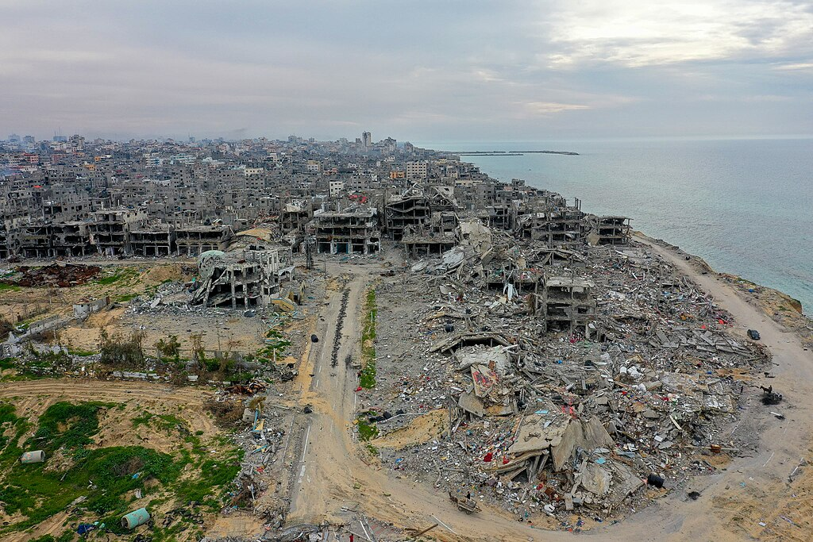

Министры Израиля обнародовали планы переселения населения Газы; США отвергли принудительное переселение
Министр национальной безопасности Итамар Бен-Гвир представил семилетний план под названием «Разделение 710». Министр обороны Исраэль Кац назвал переселение «единственным решением». Государственный департамент США отверг принудительное переселение.

В начале сентября 2026 года два члена правительства Израиля обнародовали планы, касающиеся переселения населения сектора Газа. Al Jazeera свела эти заявления в еженедельном обзоре, опубликованном 8 сентября.
План «Разделение 710»
Министр национальной безопасности Итамар Бен-Гвир представил семилетний план под названием «Разделение 710». План предусматривает вывод примерно 2 миллионов жителей Газы путём «добровольной эмиграции».
Бен-Гвир заявил, что в случае переизбрания создаст Министерство миграции, которое будет заниматься выводом палестинцев.
Заявление министра обороны
Министр обороны Израиля Исраэль Кац заявил, что вывод палестинцев из Газы — «единственное решение». Он сообщил, что Израиль готов осуществить это «по морю, по воздуху и любым возможным путём».
Реакция США
Государственный департамент США отверг любые формы «принудительного переселения, изгнания или насильственного перемещения» населения Газы. Имена министров в заявлении напрямую не упоминались.
В цифрах
- Срок плана «Разделение 710»: 7 лет
- Охватываемое население: ~2 миллиона человек
- Погибшие с октября 2023 года: 73 658 человек
- Дополнительно погибшие с октября 2025 года: более 1 340
- Оставшиеся под завалами: примерно 8 000–14 000 человек
- Неработающие очистные сооружения сточных вод: 5 из 5
Гуманитарная ситуация
По данным Министерства здравоохранения Палестины, число погибших с октября 2023 года составляет 73 658 человек. После вступления в силу соглашения о прекращении огня в октябре 2025 года погибли дополнительно более 1 340 человек.
По расчётам, примерно 8 000–14 000 палестинцев по-прежнему остаются под завалами и внесены в число пропавших без вести.
Загрязнение воды в Газе с января выросло почти втрое. Все пять очистных сооружений сточных вод в секторе не работают.
Западный берег
В обзоре отмечено, что практика сноса домов на Западном берегу продолжается. В деревне Хирбет ат-Таббан снесены все 12 домов. В деревнях аль-Мугайир и Хаджа зафиксированы случаи гибели людей в результате насилия поселенцев.
Соглашение о прекращении огня
9 октября 2025 года Израиль и ХАМАС согласились на первый этап поддержанного США мирного плана; соглашение вступило в силу с 10 октября. Это было третье соглашение о прекращении огня за время войны.
Хотя соглашение формально остаётся в силе, удары не прекратились. 6 июля 2026 года гражданская администрация ХАМАС в Газе подала в отставку; 31 июля было объявлено о достижении соглашения о разоружении ХАМАС и других вооружённых групп — это разоружение было увязано с процессом восстановления и выводом израильских сил.
С точки зрения международного права
Принудительное переселение населения с оккупированной территории запрещено Четвёртой Женевской конвенцией. Специалисты по международному праву и правозащитные организации отмечают, что даже при использовании термина «добровольная эмиграция», если у людей нет иного выбора, это считается принудительным переселением.
Согласно официальной позиции правительства Израиля, эмиграция осуществляется на добровольной основе.
Региональные позиции
Египет и Иордания неоднократно отвергали идею приёма палестинцев на свою территорию. Лига арабских государств и Организация исламского сотрудничества также выразили позицию против планов переселения.
Политический фон в Израиле
Итамар Бен-Гвир — министр национальной безопасности Израиля и руководитель крайне правой партии «Оцма Йехудит». В его заявлении указано, что план будет реализован «в случае переизбрания» — то есть предложение выдвинуто в контексте предвыборной программы.
Исраэль Кац — министр обороны. Его заявление сделано в рамках военной политики правительства. Предложения обоих министров не были обнародованы как официальное решение правительства Израиля.
Внутри Израиля нет единой позиции по этим предложениям: разные партии в составе правительства и органы безопасности подходят к вопросу по-разному.
Позиция США
Государственный департамент США отверг любые формы принудительного переселения, изгнания или насильственного перемещения населения Газы. Имена министров в заявлении не упоминались — в дипломатической практике это форма воздержания от прямой критики официальных лиц союзного государства.
США считаются основным посредником мирного плана, вступившего в силу в октябре 2025 года. План предусматривал поэтапную реализацию: обмен заложниками, расширение гуманитарной помощи, разоружение вооружённых групп и вывод израильских сил.
Вопрос восстановления
Международные обсуждения восстановления Газы продолжаются. Значительная часть жилого фонда, школ, больниц и коммунальной инфраструктуры сектора разрушена.
31 июля было объявлено о достижении соглашения о разоружении ХАМАС и других вооружённых групп; соглашение увязано с продвижением процесса восстановления и выводом израильских сил. А 6 июля гражданская администрация ХАМАС в Газе подала в отставку.
Планы переселения населения напрямую противоречат вопросу восстановления: один подход предусматривает восстановление сектора, другой — вывод из него населения.
Спор вокруг термина «добровольная эмиграция»
В плане Бен-Гвира использован термин «добровольная эмиграция». Специалисты по международному праву и правозащитные организации, комментируя этот термин, отмечают, что если условия жизни населения приведены в непригодное состояние и иного выбора не существует, решение об отъезде не может считаться добровольным.
Четвёртая Женевская конвенция запрещает принудительное переселение гражданского населения с оккупированной территории. В статуте Международного уголовного суда принудительное перемещение населения также определено как преступление против человечности.
Согласно официальной позиции правительства Израиля, эмиграция осуществляется на добровольной основе и не считается принудительным переселением.
Позиция соседних государств
Египет считается единственным арабским государством, граничащим с Газой. Каир неоднократно отвергал идею приёма палестинцев на Синайский полуостров; официальные лица Египта заявляли, что такой шаг будет расценён как полное устранение палестинского вопроса и как угроза безопасности Египта.
В Иордании высока доля населения палестинского происхождения; Амман также сохраняет позицию против дополнительного переселения. Лига арабских государств и Организация исламского сотрудничества приняли заявления против планов переселения.
Ситуация на Западном берегу
В обзоре Al Jazeera отмечено, что практика сноса домов на Западном берегу продолжается. В деревне Хирбет ат-Таббан снесены все 12 домов; в деревнях аль-Мугайир и Хаджа зафиксированы случаи гибели людей в результате насилия поселенцев.
Западный берег — отдельная от Газы территория, где действует Палестинская национальная администрация. Поселения на этой территории с точки зрения международного права оцениваются как незаконные; Израиль с этой оценкой не согласен.
В декларации БРИКС, принятой 12–13 сентября в Нью-Дели, отмечено, что насилие продолжается несмотря на соглашение от октября 2025 года, и поддержаны членство Палестины в ООН и решение на основе двух государств.
В декларации ШОС, принятой 1 сентября в Бишкеке, было указано, что всестороннее решение палестинского вопроса необходимо для стабильности на Ближнем Востоке.